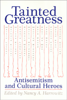

Debates about the significance of anti-semitism in the lives and work of intellectual figures
Debates about the significance of anti-semitism in the lives and work of intellectual figures


 Debates about the significance of anti-semitism in the lives and work of intellectual figures
Debates about the significance of anti-semitism in the lives and work of intellectual figures

|  |
Tainted GreatnessAntisemitism and Cultural Heroesedited by Nancy A. Harrowitzpaper EAN: 978-1-56639-161-0 (ISBN: 1-56639-161-X) |
In recent years, a number of intellectual figures behave been exposed as either proponents of or otherwise tainted by an association with antisemitism. Nancy Harrowitz has assembled a collection of powerful essays that examine the concept of "taintedness" from the perspective of a wide range of disciplines, including philosophy, religion, literature, and intellectual history.
Noting the influence of such important cultural figures as Martin Luther, Gerhard Kittel, Mircea Eliade, Carl Jung, Sigmund Freud, Cesare Lombroso, Martin Heidegger, Ezra Pound, Paul De Man, and Jean Genet, the contributors contemplate the volatile issues surrounding each figure's work and life. In an effort to understand how the phenomenon of "tainted greatness" is possible, they ask whether the revelation of prejudice devalues the work of these regarded as intellectual heroes? What it means to continue to revere intellectual greatness despite the presence of antisemitism? Is antisemitism an inextricable part of the figures' work as much as part of their lives? And finally, is it the concept of heroism or "greatness" itself, which invites or even generates the notion of taintedness, that needs to be re-examined?
Excerpt available at www.temple.edu/tempress
Acknowledgments
Introduction: – Nancy A. Harrowitz
Part I: Theology and Religion
1. Tainted Greatness: Luther's Attitudes toward Judaism and Their Historical Reception – Carter Lindberg
2. "Familiarly Known as Kittel": the Moral Politics of the Theological Dictionary of the New Testament – Alan Rosen
3. Mircea Eliade: Romanian Fascism and the History of Religions in the Untied States – Adriana Berger
4. Ungilding Spain's "Golden Age" – Shifra Armon
Part II: From Psychoanalysis to Philosophy
5. Psychoanalysis and Anti-Semitism: Tainted Greatness in a Professional Context – Sander L. Gilman
6. Lombroso and the Logic of Intolerance – Nancy A. Harrowitz
7. Herzl, Wagner, and the Ironies of "True Emancipation" – Steven Beller
8. Reading Heidegger: Destruction, Thinking, Return – Robert Gibbs
9. Italian Heidegger Affairs – Renate Holub
Part III: Literature and Theory
10. Gray Zones: Vichy, Maurice Blanchot, and the Problem of Aftereffect – Steven Ungar
11. "Jewspapers": Ezra Pound, Poststructuralism, and the Figure of the Jew – Paul Morrison
12. De Man and Idolatry – William Flesch
13. Tainted Greatness: Depravity and Sacrifice in Jean Genet – Edith Wyschogrod
Part IV: Jewish Reflections
14. Tainted Artists/Tainted Texts – Reflections from the Rabbinic Sources – Joseph Polak
15. The Remembrance of Amalek: Tainted Greatness and the Bible – Joshua Cohen
Afterword – Joseph Polak
Notes on the Contributors
Index
Nancy A. Harrowitz, Assistant Professor of Italian Literature at Boston University, is the author of Antisemitism, Misogyny, and the Logic of Cultural Difference: Cesare Lombroso and Matilde Serao and co-editor (with Barbara Hyams) of Jews and Gender: Responses to Otto Weininger (Temple).
Contributors: Shifra Armon, Steven Beller, Adriana Berger, Joshua Cohen, William Flesch, Robert Gibbs, Sander Gilman, Renate Holub, Carter Lindberg, Paul Morrison, Joseph Polak, Alan Rosen, Steven Ungar, Edith Wyschogrod, and the editor.
Philosophy and Ethics
Jewish Studies
Themes in the History of Philosophy, edited by Edith Wyschogrod.
Themes in the History of Philosophy, edited by Edith Wyschogrod, will serve as a collection of outstanding work in the history of philosophy. It will include interpretations of significant themes, problems, and tendencies in the history of thought; studies of important thinkers, schools, and movements; and inquiries into the relation of previous philosophies to literature, art, and history.
© 2015 Temple University. All Rights Reserved. This page: http://www.temple.edu/tempress/titles/1020_reg.html.